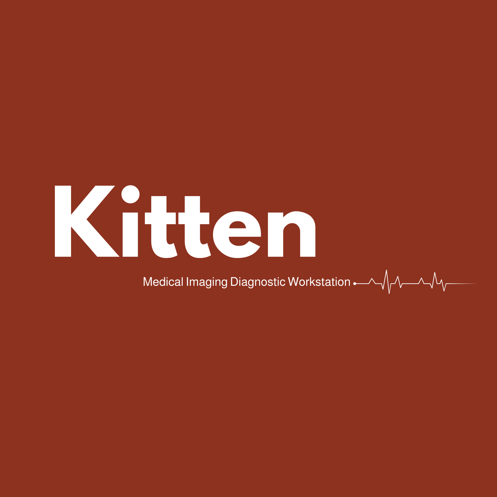

Multimodal Radiology Copilot • Structured Clinical Narrative
Right Wrist Radiograph (AP and Lateral projections).
Fall on outstretched right hand with acute pain and dorsal wrist swelling.
Complete transverse fracture of the distal radial metaphysis with mild dorsal angulation. Radiocarpal articular joint space preserved. Associated pronounced soft tissue swelling over dorsal wrist.
Acute extra-articular distal radius fracture (Colles type).
Urgent orthopedic evaluation and immobilization with volar wrist splint.

Empowering radiologists with instant YOLO11n fracture localization and MedGemma multimodal reporting.